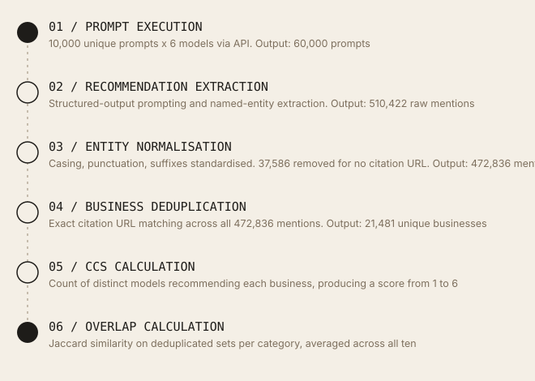
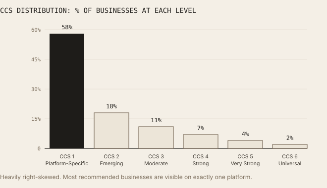
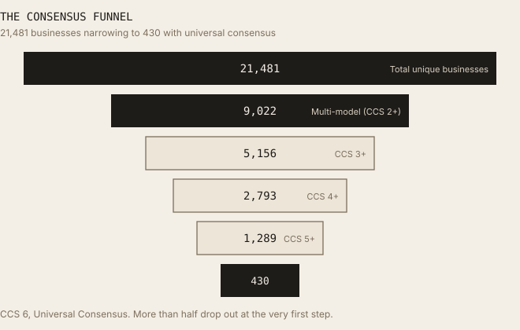
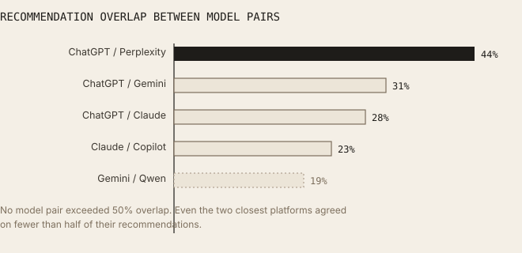
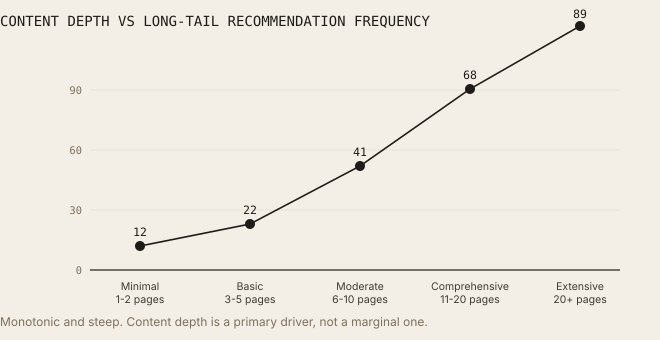
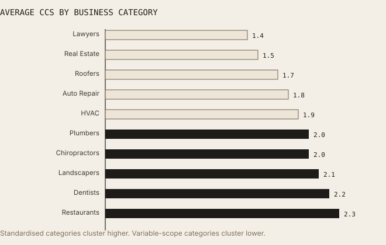
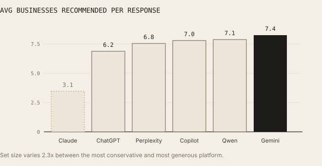
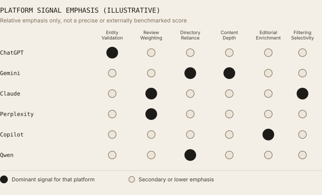
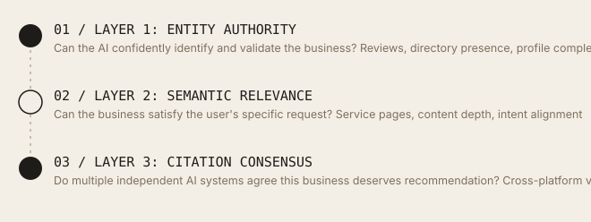

How LLMs Recommend Local Businesses
A 60,000-prompt-execution analysis across ChatGPT, Gemini, Claude, Perplexity, Microsoft Copilot, and Qwen, examining how AI systems select, validate, and recommend local businesses.
Every pre-study assumption about how AI recommends local businesses turned out to be wrong: reviews weren't the strongest predictor, models didn't converge the way search engines do, and strong local SEO didn't translate into consistent visibility. What actually separated the businesses that showed up everywhere from the ones that didn't was a specific, three-part combination.
01 / Executive Summary
There is no single AI ranking system for local businesses.
Local search is entering a new era. For nearly two decades, local visibility was governed by search engines, local map packs, directory listings, and review platforms. Today, consumers increasingly ask AI assistants directly: "Who is the best landscaper near me?", "Which dentist should I choose?", "Find me a highly rated HVAC contractor." As AI assistants become recommendation engines in their own right, a new question emerges: how do AI systems decide which local businesses to recommend?
This study ran 60,000 prompt executions across six major AI platforms (ChatGPT, Gemini, Claude, Perplexity, Microsoft Copilot, and Qwen), spanning ten high-commercial-intent local categories. The result: 472,836 individual business recommendations, 21,481 unique businesses after entity resolution and deduplication, and a clear answer to the central question.
The answer is not what was expected. Before the study, the prevailing assumption was that review count would be the strongest predictor of recommendation frequency, that AI systems would largely agree with one another the way search engines converge on similar rankings, and that strong local SEO would translate fairly directly into AI visibility. None of these held. The central finding is that there is no single AI ranking system for local businesses. There are multiple, largely independent recommendation ecosystems, each governed by different retrieval logic, validation criteria, and recommendation thresholds.
58% of recommended businesses appeared in only one AI platform. No pair of models exceeded 50% recommendation overlap. Four pre-study hypotheses, review-count dominance, high cross-model overlap, Google-ecosystem convergence, and SEO universality, were all tested against the data and all four were rejected (see Section 09). The businesses that achieved cross-platform visibility shared three characteristics: strong entity authority, strong semantic relevance, and high citation consensus. This three-layer structure forms the Local GEO Framework presented in Section 08.
This study measured AI recommendation behaviour across six platforms simultaneously for local businesses, using Citation Consensus Score (CCS), a metric introduced here to quantify how many independent AI systems recommend the same business, alongside a direct measurement of just how fragmented those recommendations are.
02 / Study Design
Scale, scope, and prompt construction.
| Metric | Value | Detail |
|---|---|---|
| Business Categories | 10 | Landscapers, Dentists, HVAC, Plumbers, Roofers, Restaurants, Lawyers, Chiropractors, Auto Repair, Real Estate Agents |
| Unique Prompts per Category | 1,000 | Designed to replicate realistic consumer query variation, not keyword lists |
| AI Models Tested | 6 | ChatGPT, Gemini, Claude, Perplexity, Microsoft Copilot, Qwen |
| Market | 1 | San Diego, CA, accessed via VPN; see Geographic Scope in Section 12 |
| Total Prompt Executions | 60,000 | 10 categories x 1,000 prompts x 6 models |
| Recommendations Extracted | 472,836 | Individual business mentions parsed from all model responses |
| Unique Businesses | 21,481 | Deduplicated entity set across all platforms and categories |
The ten categories were selected because they represent high-commercial-intent local searches, decisions where the recommendation directly and immediately influences a purchase or hiring decision. Each prompt set was executed identically across all six models to eliminate prompt variation as a source of bias. All 60,000 prompts were executed from a single market, San Diego, CA, via VPN, rather than distributed across multiple cities or regions; see Geographic Scope in Section 12 for what this means for how the findings generalise.
Five query types per category. For each category, 1,000 unique prompts were constructed across five query type families to capture the genuine range of how consumers phrase local business queries to AI assistants.
| Query Type | Example Prompts |
|---|---|
| Recommendation | "Best provider near me" / "Top-rated provider" / "Most trusted provider" |
| Cost-Based | "Affordable provider" / "Best value provider" / "Budget-friendly provider" |
| Specialty | "Emergency provider" / "Family-owned provider" / "Eco-friendly provider" |
| Service-Specific | "Installation specialist" / "Maintenance specialist" / "Repair specialist" |
| Location-Based | "Provider near downtown" / "Provider in my neighbourhood" / "Provider serving my city" |
Validation tooling. Data collected in this study was compiled into spreadsheets for processing. An LLM was used to assist in validating the collected data and calculations, including cross-checking extraction, normalisation, and deduplication outputs against the underlying dataset for accuracy and completeness. This is standard practice in data-heavy research today and supplements, but does not replace, the specific validation steps described in Section 03 (such as the citation URL matching applied to the complete dataset).
03 / Data Processing Pipeline
From 60,000 prompt executions to 21,481 unique businesses.
The headline figures in this study represent the output of a six-stage processing pipeline, not a single measurement. Each stage introduces specific decisions about extraction, normalisation, and matching that materially affect the final numbers. The full pipeline is documented here so the path from raw model output to the reported metrics is traceable rather than asserted.

The path from raw model output to the reported metrics, traceable rather than asserted.The gap between Stage 2 (510,422 raw mentions) and Stage 3 (472,836 normalised mentions) is 37,586 mentions. These were removed during normalisation because they had no citation URL attached; since web search was enabled for every model, a mention with no linkable source could not be verified against a real business or checked for duplicates, so it was treated as a junk response for the purposes of this study and dropped rather than carried forward. The gap between Stage 3 and Stage 4 (21,481 unique businesses) reflects the same physical business being mentioned repeatedly across prompts, models, and categories.
Deduplication accuracy. Since web search was enabled for every model, all 472,836 normalised mentions carried a citation URL, because mentions without one were already removed at the Stage 2 to 3 step above. These URLs were normalised (protocol, www-prefix, and tracking parameters stripped) and checked for exact domain-plus-path duplicates across the complete set of 472,836 mentions, using Excel's duplicate-detection function. This was applied to every mention, not a sample. Because the check required an exact path match rather than just a matching domain, two different businesses both cited via the same directory (for example, two different Yelp listings) were not merged together. Matching was performed on the citation URL as returned by the model, not on the underlying real-world business. No redirect resolution and no cross-referencing between a business's own website and its third-party directory listings (Yelp, Google Business Profile, Facebook, and similar) was performed, so the same real business cited via two different URLs was recorded as two separate businesses rather than one. See Deduplication Accuracy and Cross-Platform Overlap in Section 12 for how this affects the reported figures.
04 / Citation Consensus Framework
A metric used to quantify cross-platform agreement in this study.
During the first phase of analysis, an unexpected pattern emerged: for identical prompts, different AI systems frequently returned completely different businesses. The initial assumption was that this reflected random variation in model sampling. Reviewing the extracted mentions, with an LLM assisting in surfacing and cross-checking the pattern across the dataset, showed the pattern was structural rather than random. Some businesses repeatedly appeared across multiple LLMs while others appeared in only a single platform, consistently, across many different prompt variations.
Citation Consensus Score (CCS) measures how many independent AI systems recommend the same business for a given category and query type. Unlike a ranking position, which measures where a business appears within one system's results, CCS measures whether multiple, architecturally independent AI systems agree that a business is worth recommending at all.
| CCS Level | Consensus Tier | % of Businesses |
|---|---|---|
| 1 | Platform-Specific Citation | 58% |
| 2 | Emerging Consensus | 18% |
| 3 | Moderate Consensus | 11% |
| 4 | Strong Consensus | 7% |
| 5 | Very Strong Consensus | 4% |
| 6 | Universal Consensus | 2% |

Heavily right-skewed. Most recommended businesses are visible on exactly one platform.The distribution is heavily right-skewed. 58% of businesses cluster at CCS 1, meaning the majority of all recommended businesses are visible in only one AI platform. Only 2% achieved Universal Consensus across all six platforms tested.
The Consensus Funnel. Expressed as an attrition funnel, the scale of the drop-off from "exists in the dataset" to "universally recommended" becomes sharper. A gradual narrowing would be the more intuitive shape; the actual funnel narrows steeply at the first step alone: more than half of all businesses are eliminated from cross-platform visibility before the funnel even reaches its second stage.

More than half drop out at the very first step.Of 21,481 unique businesses: 9,022 (42%) achieved multi-model recommendation (CCS 2+). Just 5,156 (24%) reached CCS 3+, 2,793 (13%) reached CCS 4+, 1,289 (6%) reached CCS 5+, and only 430 businesses (2%) achieved Universal Consensus across all six platforms.
05 / Key Findings
Five findings from 472,836 recommendations.
- Finding 01: 58% platform-specific only. Most businesses exist inside a single AI ecosystem. Most well-established local businesses might be assumed to be visible across most major AI platforms. The data shows otherwise: 58% of all recommended businesses appeared in only one AI system. A business highly visible in one platform may remain completely absent from others. The majority of businesses achieved visibility in only one AI system.
- Finding 02: 58% Recommendation Fragmentation Rate. AI recommendation fragmentation is substantial. Observed: nearly six in ten recommendations originate from businesses appearing in only one model, more than double the 20 to 25% anticipated based on historical local search variation. One possible explanation: historically, local search revolved around shared ranking systems. AI systems do not replicate that shared-ranking behaviour. Each has its own retrieval and validation logic that produces a structurally distinct recommendation pool.
- Finding 03: 44% highest pairwise overlap (ChatGPT/Perplexity), 19% lowest (Gemini/Qwen). Different models behave like different discovery engines. Observed: no pair of models exceeded 50% recommendation overlap anywhere in the dataset, not even conceptually similar pairings. Even ChatGPT and Perplexity, the closest pairing, reached only 44%. This directly contradicts the assumption that AI search would converge on a shared local ranking the way traditional search engines do. One possible explanation: each platform applies different retrieval architectures, validation thresholds, and signal weighting, producing structurally different recommendation sets even for identical prompts.
- Finding 04: 3 layers (Entity, Semantic, Consensus). Entity authority consistently appears among recommended businesses. Observed: high-CCS businesses clustered into three characteristics: consistent business identity across the web, broad active reputation signals (multi-platform reviews, not concentrated on one site), and breadth of directory presence over depth in any single place. One possible explanation: AI systems performing entity resolution may reward breadth of corroborating signals over depth in a single source, since breadth reduces entity ambiguity.
- Finding 05: Monotonic (content depth vs recommendation frequency). Content determines recommendation relevance for long-tail queries. Observed: entity authority alone was sufficient for broad recommendation queries but proved insufficient as prompts became more specific. Businesses with comprehensive service pages, geographic coverage pages, and industry-specific expertise content appeared more frequently for long-tail and niche prompts, regardless of their entity authority strength. One possible explanation: specific queries require semantic matching that only content can provide. Entity signals tell AI systems a business exists; content signals tell them whether it is the right match.

No model pair exceeded 50% overlap.These figures are drawn from the aggregate dataset across all ten categories; this report does not include a category-by-category breakdown of pairwise overlap, so it's not possible to confirm the pattern held with the same magnitude in every individual category. One further caveat applies to all of these overlap figures: deduplication matched on the citation URL as returned by the model, not on the underlying real-world business, with no redirect resolution and no cross-referencing between a business's own website and its third-party directory listings. So if two different platforms cited the same real business via two different URLs (for example, its own website versus its Yelp listing), that business was not merged into one canonical record. That would cause a genuine cross-platform recommendation to be counted here as two separate, platform-specific businesses instead of one shared one, understating overlap and overstating fragmentation, rather than the reverse. See Deduplication Accuracy and Cross-Platform Overlap in Section 12 for detail; this has not been separately quantified, so the true overlap and fragmentation figures could be somewhat higher and lower, respectively, than reported here.
Long-Tail Recommendation Frequency vs. Content Coverage Depth
Recommendation frequency for niche and long-tail prompts plotted against content coverage depth (distinct service, location, and specialty pages). The relationship is monotonic and steep: content depth is not a marginal factor but a primary driver of long-tail recommendation frequency.

Monotonic and steep. Content depth is a primary driver, not a marginal one.06 / Category and Model Breakdowns
How recommendation behaviour varies by category and platform.
The findings in Section 05 describe the dataset in aggregate. Disaggregating by category and by model surfaces two further patterns that did not emerge from the pooled data alone.
Average Citation Consensus Score by category. One assumption worth testing was whether Citation Consensus stays relatively uniform across categories, on the theory that fragmentation is primarily a property of how AI systems behave rather than a property of any particular local service vertical. The data does not support this: average CCS varied meaningfully by category. Categories with higher review-platform standardisation and clearer, more uniform service definitions (restaurants, dentists) showed materially higher average consensus than categories with more variable service scope and naming conventions (lawyers, real estate agents).

Standardised categories cluster higher. Variable-scope categories cluster lower.Restaurants and dentists, categories with standardised review-platform presence and relatively uniform service definitions, achieved the highest average consensus. Lawyers and real estate agents, where service scope and naming conventions vary widely, achieved the lowest, consistent with these categories presenting AI systems with a harder entity-resolution and semantic-matching problem.
Model citation volume: businesses recommended per response. A reasonable starting assumption is that all six models would return a broadly similar number of businesses per response, since the underlying prompts were identical. That did not hold: average recommendation set size varied by more than 2.3x between the most conservative and most generous model (Claude at 3.1 versus Gemini at 7.4).

Set size varies 2.3x between the most conservative and most generous platform.Claude's smaller average set size (3.1) is consistent with a higher filtering threshold, though this study did not directly measure filtering behaviour and this remains an interpretation rather than a confirmed mechanism. Gemini's larger average (7.4) is consistent with a listing-style approach, often returning broader sets resembling directory listings rather than a short curated recommendation. A business's odds of appearing in any single response are partly a function of how large that model's typical recommendation set is, independent of the business's actual quality signals.
07 / Platform Behavioural Profiles
Six platforms, six distinct discovery engines.
Each of the six platforms displayed a distinct, dominant recommendation tendency across the aggregate dataset, reinforcing the core finding that these behave like six different discovery engines, not six interfaces to one shared ranking system. These labels describe the strongest pattern observed for each platform across 10,000 prompts; they are simplifications of a messier reality, and any individual response from a given platform will not always match its labelled tendency.
| Platform | Dominant Tendency | Key Signal | Pattern |
|---|---|---|---|
| ChatGPT | Favours multi-source corroboration | Entity validation | Surfaces businesses supported by multiple independent sources rather than a single strong source |
| Gemini | Listing-style enrichment | Business profile completeness | Responses resemble enriched local business listings with profiles, service areas, and operational detail |
| Claude | High filtering threshold | Reputation emphasis | Smaller, more selective recommendation sets; behaves more like a recommender than a search engine |
| Perplexity | Review-led prioritisation | Consumer trust metrics | Prioritises review signals and reputation indicators over other entity signals |
| Microsoft Copilot | Editorial enrichment | Third-party contextual detail | Incorporates editorial descriptions and rich third-party business information |
| Qwen | Directory-anchored | Search-indexed presence | Stronger reliance on directory data and public, search-indexed business references |

Illustrative relative emphasis, not a precise or externally benchmarked score.The scores behind this chart are a relative, qualitative characterisation of how strongly each platform leaned on a given signal across the dataset, not a separately validated or externally benchmarked scoring system; no independent scoring methodology is published alongside this report, so the chart should be read as illustrative of relative emphasis rather than as a precise, reproducible measurement. With that caveat, no two platforms share the same shape across entity validation weight, review/reputation weighting, directory data reliance, content-depth sensitivity, editorial enrichment tendency, and filtering selectivity, consistent with each model functioning as a structurally distinct discovery engine.
08 / The Local GEO Framework
Three layers that determine local AI visibility.
After analysing all 472,836 recommendations, a clear three-layer framework emerged describing what determines local AI visibility. Each layer answers a different question an AI system implicitly asks before recommending a business.

All three layers were required simultaneously for durable, cross-platform visibility.Layer 1: Entity Authority. "Can the AI confidently identify and validate the business?" Signals include reviews, directory presence, business profile completeness, and service area definition. This layer determines whether an AI system can resolve the business as a real, verifiable, confidently-identifiable entity before it can be recommended at all.
Layer 2: Semantic Relevance. "Can the business satisfy the user's specific request?" Signals include service pages, content depth, geographic relevance, and intent alignment. This layer determines whether the business is actually a good match for the specific, often long-tail, intent behind the user's query, not just whether it exists.
Layer 3: Citation Consensus. "Do multiple independent AI systems agree this business deserves recommendation?" Signals include cross-platform visibility, recommendation overlap, and entity consistency across ecosystems. In this study, this layer is the one most directly correlated with durable, defensible AI visibility.
Entity authority alone was insufficient, and semantic relevance alone was insufficient. The businesses that achieved durable, cross-platform AI visibility consistently demonstrated all three layers simultaneously. A business strong on only one or two layers achieved fragmented, platform-specific visibility at best.
09 / Where the Industry Assumptions Broke Down
Four industry assumptions the data rejected.
Several pre-study assumptions, widely held across the local SEO and GEO industry, failed to hold up against the data. Each is documented explicitly below because these assumptions are actively shaping how businesses invest in AI visibility today, and the data says they are wrong.
| Hypothesis | Expected | Observed | Status |
|---|---|---|---|
| H1: Review count dominance | Highest review-count businesses dominate recommendations | Review count alone showed weak predictive power. Multi-platform review presence and recency mattered more than raw count. | Rejected |
| H2: High cross-model overlap | Overlap would exceed 50% across model pairs | No model pair exceeded 50%. Highest pairing (ChatGPT and Perplexity) reached 44%. | Rejected |
| H3: Google-ecosystem convergence | Google-oriented systems (Gemini) would converge with other web-connected models | Gemini and Qwen overlap was the lowest measured pairing at 19%. No Google-affinity convergence observed. | Rejected |
| H4: SEO universality | Strong local SEO creates consistent visibility across all AI platforms | Recommendation fragmentation (58%) and platform-specific behavioural profiles contradict universal visibility from SEO alone. | Rejected |
Every hypothesis assumed AI recommendation behaviour would mirror the shared-ranking logic of traditional search. None held.
10 / Recommendations
What businesses should do differently.
These recommendations are derived directly from the data and are structured around the three-layer Local GEO Framework. As noted in Section 12, this study observed correlations between these characteristics and CCS; it did not experimentally manipulate any of them. These are presented as the strongest patterns found among high-CCS businesses, not as proven causal levers, and results for any individual business may vary.
Layer 1: Build entity authority
- Prioritise consistency over concentration. Ensure your business name, contact information, service description, and location details are identical across every platform and directory where you appear. Entity ambiguity was one of the factors most consistently associated with lower CCS in this dataset: businesses that AI systems could not confidently identify as the same entity across sources were recommended less consistently across platforms.
- Distribute reviews across platforms, not just depth on one. In this dataset, multi-platform review presence was a stronger predictor of cross-platform recommendation than raw review count on a single platform. Businesses with ratings spread consistently across four platforms tended to outperform, in CCS terms, businesses with higher ratings concentrated on one platform.
- Build breadth of directory presence, not just depth. High-frequency recommendations appeared across multiple business ecosystems and directories simultaneously. The breadth of digital presence appeared more predictive of cross-platform recommendation than dominance in any single directory.
Layer 2: Build semantic relevance
- Create dedicated service, location, and specialty pages. Content depth showed a monotonic association with long-tail recommendation frequency. Businesses with comprehensive service pages, geographic coverage pages, and industry-specific expertise content appeared more frequently for specific prompts regardless of their entity authority strength. For long-tail queries, content depth was the factor most strongly associated with recommendation frequency.
- Target specific query types with specific content. The five query type families tested (recommendation, cost-based, specialty, service-specific, location-based) each triggered different retrieval behaviour. Specialty and service-specific queries in particular showed the steepest content-depth relationship. Build content specifically designed to answer each query type rather than relying on a single general description of your business.
Layer 3: Build citation consensus
- Optimise for each platform separately, not for "AI search" generically. Because each platform weights different signals (Section 07), generic "AI visibility" advice is insufficient. For ChatGPT visibility, prioritise multi-source corroboration. For Perplexity visibility, prioritise review recency and breadth. For Gemini and Qwen visibility, prioritise directory and profile completeness. For Claude, the filtering threshold means fewer businesses are recommended, so quality signals matter more than quantity.
- Measure CCS, not just presence in one platform. A business that appears in only one AI platform has a CCS of 1. That is not AI visibility: it is platform-specific visibility, which may disappear with a single model update. The strategic goal is to increase CCS over time by strengthening the entity authority and semantic relevance signals associated with cross-platform consensus in this data. Track your CCS across all six platforms, not just your Google or Bing rankings.
11 / Glossary
Definitions used in this study.
- Citation Consensus Score (CCS)
- The number of distinct AI platforms (out of six) that recommended a given business at least once across any prompt in its category. Ranges from 1 (platform-specific) to 6 (universal consensus). Measures cross-platform agreement, not within-platform frequency.
- Recommendation Fragmentation Rate (RFR)
- The percentage of all recommended businesses that appeared in only one AI platform. In this study: 58%. Measures how concentrated AI recommendations are within single platforms rather than shared across them.
- Entity Authority
- Layer 1 of the Local GEO Framework. The degree to which an AI system can confidently identify, validate, and resolve a business as a real, verifiable entity before recommending it. Driven by business name consistency, directory presence, profile completeness, and multi-platform review footprint.
- Semantic Relevance
- Layer 2 of the Local GEO Framework. The degree to which a business's content signals match the specific intent behind a user's query. Driven by service pages, geographic coverage pages, and specialty or expertise content.
- Pairwise Overlap
- The proportion of one model's recommended business set that also appears in another model's recommended business set for the same category, calculated using Jaccard similarity and averaged across all ten categories.
- Citation URL Matching
- Deduplication by comparing normalised citation URLs (domain plus exact path) rather than domain alone, so that different businesses sharing a directory domain (for example, two different Yelp listings) are not incorrectly merged. Matches on the URL as returned by the model, with no redirect resolution and no cross-referencing between a business's own website and its third-party directory listings. Used as the sole deduplication method in this study, applied to all 472,836 normalised mentions.
12 / Limitations
Scope boundaries and caveats.
- LLM-Assisted Validation. An LLM was used to assist in validating collected data and calculations, alongside the specific methods described in Section 03. This is a useful check but not equivalent to independent third-party audit, and LLM-assisted review carries its own error modes (for example, missing subtle inconsistencies or being overly confident about ambiguous cases). It should be read as an additional layer of quality control, not as a substitute for the citation URL matching and other explicit validation steps described elsewhere in this report.
- Geographic Scope. All prompts were executed from a single market (San Diego, CA, via VPN) rather than distributed across multiple cities or regions. Recommendation behaviour, platform fragmentation, and CCS distributions reported here reflect this one market's business density, review ecosystem maturity, and directory coverage. Results may not generalise to smaller markets, other countries, or regions with different local digital infrastructure.
- Extraction Accuracy. The upstream named-entity extraction step (Stage 2, parsing business mentions out of free-text model responses) was not independently validated against a labelled sample, so its precision and recall are unknown. Any extraction errors at that stage would carry through to every downstream figure, including the final 21,481-business count, even though deduplication itself was verified against the complete dataset (see Deduplication Accuracy below).
- Deduplication Accuracy and Cross-Platform Overlap. All 472,836 normalised mentions were deduplicated using exact, normalised citation URL matching (domain plus path), since web search was enabled for every model and every mention carried a citation. This was applied to the complete dataset, not a sample, and avoids the false-merge risk of matching on domain alone (for example, two different businesses both cited via Yelp). However, matching was performed on the citation URL as returned by the model, not on the underlying real-world business: no redirect resolution was performed, and no cross-referencing was done between a business's own website and its third-party directory listings (Yelp, Google Business Profile, Facebook, and similar). So if the same real business was cited via two different URLs by two different platforms, exact URL matching would not identify these as the same business. That business would then be counted as two separate, single-platform business records instead of one business recommended by two platforms. This works in one specific direction: it would cause this study to understate true cross-platform overlap and overstate the 58% fragmentation rate and the CCS1 (single-platform) tier, not the reverse. The scale of this effect has not been separately quantified, so the reported overlap and fragmentation figures should be read as a conservative floor on true overlap, not an exact measurement of it.
- Statistical Precision. No confidence intervals or significance testing are reported anywhere in this study. The topline figures (58% fragmentation, 21,481 businesses) are drawn from the full 60,000-execution dataset, but finer-grained splits, such as per-category CCS averages or individual model-pair overlaps, are based on smaller effective sample sizes and should be treated as having wider, unquantified uncertainty than the topline numbers.
- Model Versions and Timeframe. This report does not record the specific model versions or exact date range used for the 60,000 executions. Given the Platform Evolution limitation below, this materially limits exact reproducibility; a reader attempting to replicate this study should not assume current model versions will produce the same figures.
- Categories. Ten high-commercial-intent local service categories. Behaviour in retail, hospitality, healthcare, or other verticals may differ. Categories with highly standardised service definitions (restaurants, dentists) showed systematically different CCS distributions than those with variable scope (lawyers, real estate).
- AI Non-Determinism. All recommendations were extracted from a single execution per prompt per model. AI responses are non-deterministic; a second execution would produce partly different recommendations. CCS and overlap figures reflect a single cross-sectional observation, not a longitudinal average. This means some portion of the reported 58% fragmentation rate and the pairwise overlap figures (44% high, 19% low) may reflect single-run sampling noise rather than purely structural platform disagreement. This study did not measure how much a single model disagrees with itself across repeated runs of the same prompt, so the noise component cannot be separated from the signal component with the current data. The headline figures should be read as directionally reliable but not exact to the percentage point, and they are specific to this dataset rather than a universal constant.
- Platform Evolution. All six platforms are under active development. Recommendation behaviour, signal weighting, and retrieval architectures may change after the study period.
- Correlation vs. Causation. The three-layer framework describes what characteristics high-CCS businesses share. This study did not experimentally manipulate any of those characteristics. This data alone does not establish that building entity authority or content depth will increase CCS, only that businesses with higher CCS tend to have these characteristics.
13 / Conclusion
The local AI visibility landscape is fragmented, and that matters.
The central finding of this study is straightforward to state: there is no single AI ranking system for local businesses. There are multiple, largely independent recommendation ecosystems, each governed by different retrieval, validation, and recommendation logic. Businesses that consistently appeared across AI systems demonstrated strong entity authority, strong semantic relevance, and high citation consensus simultaneously, not any single trait in isolation.
As AI assistants continue replacing traditional discovery workflows for local services, local visibility will become less about ranking highly in a single platform and more about earning independent recommendation across an entire, fragmented AI ecosystem. The future winners in local AI visibility will not be the businesses that rank highest in one system. They will be the businesses that achieve visibility across the full breadth of AI platforms consumers actually use.
"There is no single AI ranking system for local businesses. There are six largely independent recommendation ecosystems, each with its own logic. Businesses that ignored this fragmentation were invisible to the majority of AI platforms, regardless of how strong their local SEO was."
Across 60,000 prompt executions and six platforms, the businesses with the highest Citation Consensus Scores shared three things: a consistent, easily resolvable entity identity across the web; content that specifically and comprehensively answered the kinds of queries users were actually asking; and a broad, multi-platform presence that gave multiple independent AI systems corroborating evidence to recommend them. None of these is a new concept individually. What this dataset shows is that all three were required simultaneously for the businesses that achieved durable cross-platform visibility here, and that being strong on only one or two produced fragmented, platform-specific visibility that a single model update can eliminate.